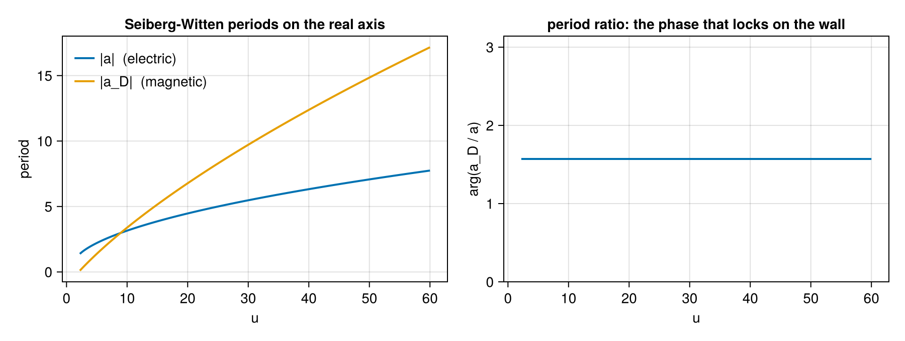
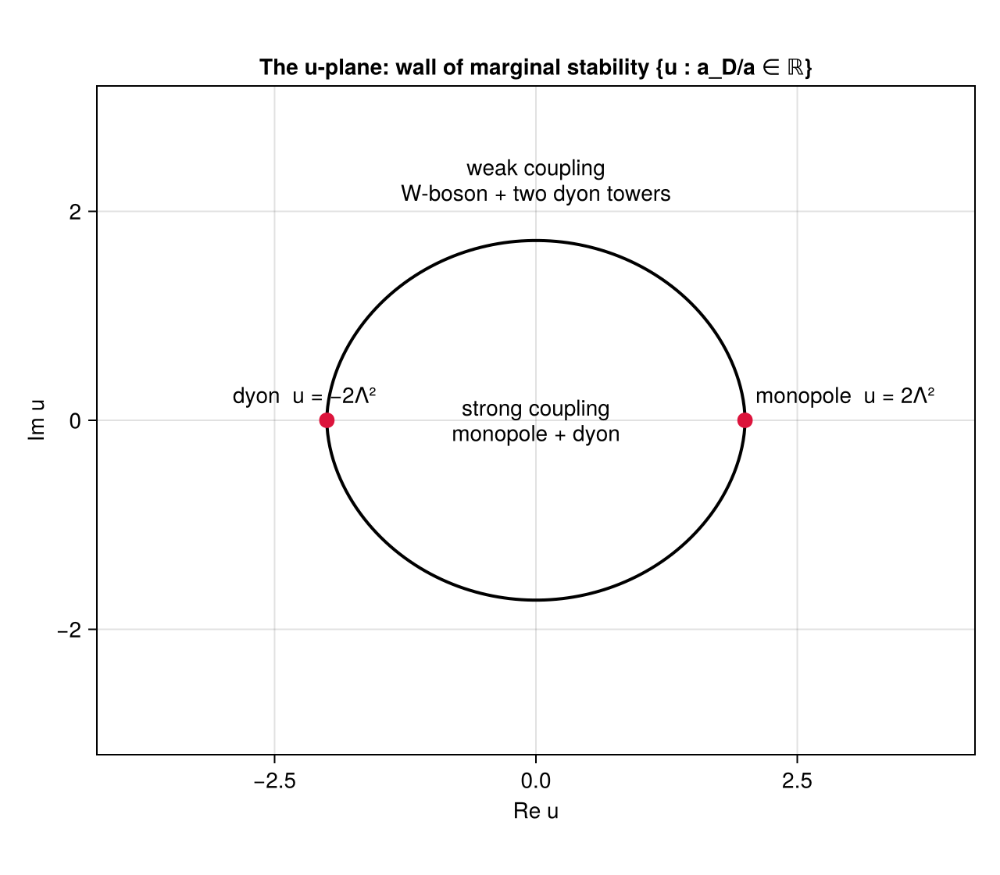
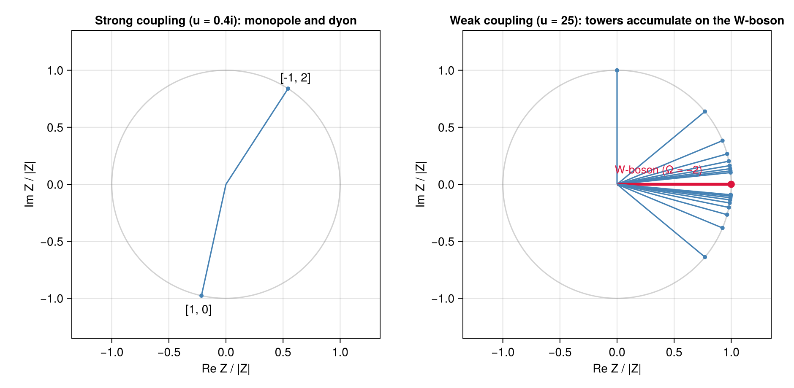
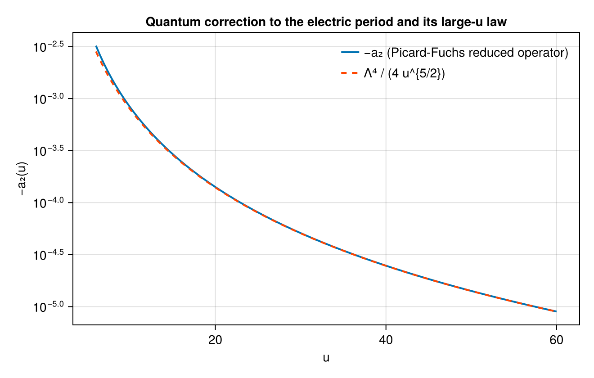

Seiberg-Witten SU(2)
The research problem
A quantum field theory at strong coupling is hard because the objects you can calculate with (fields, Feynman diagrams) are not the objects that exist (particles, bound states). Perturbation theory answers what happens if the coupling is small. It says nothing about which particles are stable when it is not, and that answer can change discontinuously as you move through the space of vacua, with bound states forming and decaying.
The concrete question this tutorial answers, for one specific four-dimensional theory, is:
Which particles exist, what are their masses, and how does that list change as the vacuum is varied?
Seiberg and Witten answered it in 1994 for the pure $SU(2)$ gauge theory with $\mathcal N = 2$ supersymmetry, and their answer is exact rather than a perturbative expansion. The whole low-energy theory is encoded in the geometry of an auxiliary elliptic curve, and the masses are integrals, the periods, over cycles of that curve.
Below, every piece of that answer is computed from one input number, and each piece is verified against something independent:
| Step | Computed | Verified against |
|---|---|---|
| periods $a(u)$, $a_D(u)$ | closed form, whole plane | the three-instanton weak-coupling series |
| monodromy | transport of a differential equation | exactness of the integer matrices, and their factorization |
| wall of marginal stability | bisection on the period ratio | the literature value of its crossing point |
| spectrum, strong coupling | two states | the wall-crossing identity |
| spectrum, weak coupling | infinite tower | the same identity, closing exactly |
| quantum corrections | Picard-Fuchs reduced operator | an independent quadrature and the known large-$u$ law |
Everything here runs in a few seconds. The tutorial uses no series resummation anywhere, even though resummation is what the rest of the package is about; the reason is explained at the end.
The theory, briefly
Enough background to make the code meaningful. Skip to Setting up if you know it.
The theory has a one-complex-dimensional family of inequivalent vacua, the Coulomb branch, parametrized by a coordinate $u$. Classically $u = \langle\mathrm{tr}\,\phi^2\rangle$ measures how the gauge symmetry is broken. Large $|u|$ is weak coupling, where the theory looks like electrodynamics with a heavy W-boson, and small $|u|$ is strong coupling, where it looks like nothing familiar. (Seiberg-Witten theory on Wikipedia.)
A stable particle carries an electric charge $n_e$ and a magnetic charge $n_m$, both integers. Supersymmetry gives every such state a central charge, a complex number
\[Z_{(n_m,n_e)}(u) = n_m\, a_D(u) + n_e\, a(u),\]
and forces the mass bound $M \geq |Z|$. States that saturate it, the Bogomolny-Prasad-Sommerfield or BPS states, have masses exactly $|Z|$ with no quantum corrections. Computing masses therefore reduces to computing the two functions $a(u)$ and $a_D(u)$, the electric and magnetic periods. (The bound on Wikipedia.)
The periods are integrals over the two independent cycles of an elliptic curve fibered over the $u$-plane. At two special values of $u$ the curve degenerates, a cycle shrinks to nothing, and the corresponding state becomes massless: a magnetic monopole at $u = +2\Lambda^2$ and a dyon (a state with both charges) at $u = -2\Lambda^2$. Here $\Lambda$ is the dynamically generated scale, the theory's only dimensionful parameter and the analogue of $\Lambda_{\text{QCD}}$.
Two things make the answer subtle. Going around a singular point permutes the two periods continuously: a monodromy. Since $(a_D, a)$ is a basis of a lattice of charges, that permutation is an integer matrix, and the three monodromies, around the two singularities and around infinity, must be consistent. That constraint is what fixes the solution. The stable spectrum is also not constant. A closed curve on the $u$-plane, the wall of marginal stability, separates a region with two stable states from one with infinitely many.
The problem becomes an exact Wentzel-Kramers-Brillouin problem in a particular supersymmetry-breaking deformation, the Nekrasov-Shatashvili limit, where it turns into an ordinary differential equation with a small parameter $\hbar$: the Mathieu equation. In this package's normalization $\hbar^2\psi'' = (V - E)\psi$, that is
\[V(x) = 2\Lambda^2\cos 2x, \qquad E = u .\]
The electric period is the classical action of a particle oscillating in a well of that cosine potential. The magnetic period is the tunnelling action of the classically forbidden motion through the barrier. Everything you know about the double well (see The double well) applies verbatim: $a$ is the perturbative object, $a_D$ is the instanton, and the $\hbar$-expansion of either one diverges.
Two threads run through the package and meet here:
- Resurgence. The $\hbar$-expansions of the periods are divergent series whose Borel singularities sit on the central charges of BPS states. The correction terms below are the start of that expansion, and the machinery for summing them is Resurgence.jl.
- Cluster algebras. The BPS spectrum is the representation theory of a quiver, and moving across a wall of marginal stability is a quiver mutation. For this theory the quiver is the Kronecker quiver, and the fact that it has infinitely many clusters is the fact that the weak-coupling spectrum is an infinite tower. That side of the computation lives in ClusterAlgebras.jl.
Setting up
The only input is $\Lambda$. Set it to 1 and every mass below is in units of the dynamical scale:
julia> using ExactWKB
julia> import Resurgence, ClusterAlgebras
julia> sw = SeibergWittenSU2() # Λ = 1
SeibergWittenSU2 - pure SU(2) N=2 Seiberg–Witten geometry
Λ : 1.0
singularities: monopole u = 2.0, dyon u = -2.0
julia> sw_singularities(sw)
(monopole = 2.0, dyon = -2.0)That leaves three punctures on the $u$-plane, the two above plus the point at infinity. Everything that follows is a consequence of them.
Step 1: periods, and a check at weak coupling
sw_periods returns both periods at once:
julia> sw_periods(sw, 10.0)
(a = 3.1542965233667855 + 0.0im, a_D = 0.0 + 3.386364195051362im)At weak coupling there is an independent answer to compare with. The classical relation is $u = a^2$, and the quantum corrections form an instanton expansion with known coefficients:
\[u(a) = a^2 + \frac{\Lambda^4}{2a^2} + \frac{5\Lambda^8}{32a^6} + \frac{9\Lambda^{12}}{64a^{10}} + \dots\]
The three terms after the first are the one-, two- and three-instanton contributions. Inverting our computed $a(u)$ should reproduce $u$:
julia> for u in (10.0, 25.0, 100.0)
a = real(sw_periods(sw, u).a)
u_ser = a^2 + 1/(2a^2) + 5/(32a^6) + 9/(64a^10)
println("u = ", rpad(u, 6), " a = ", round(a; sigdigits = 8),
" u − series = ", round(u - u_ser; sigdigits = 3))
end
u = 10.0 a = 3.1542965 u − series = 1.89e-8
u = 25.0 a = 4.997997 u − series = 2.96e-11
u = 100.0 a = 9.99975 u − series = -5.68e-14The mismatch falls like the next (four-instanton) term as $u$ grows, reaching thirteen digits of agreement at $u = 100$. This pins the normalization of $a$, and it is a real check: the instanton coefficients come from localization on instanton moduli space, a different computation from our elliptic integral.
Near the monopole point the magnetic period vanishes linearly. That is the mechanism of the Seiberg-Witten solution, since a particle becoming massless is what makes the strong-coupling physics tractable:
julia> sw_periods(sw, 2.0 + 1e-6)
(a = 1.2732410546693917 + 0.0im, a_D = 0.0 + 4.999999847313274e-7im)$a_D \approx 5\times10^{-7}$ at distance $10^{-6}$ from the singularity: a monopole with a mass we can drive to zero at will.
Both periods are available anywhere on the complex plane, not only on the real axis. They are evaluated in closed form through complete elliptic integrals
\[a(u) = \frac{2}{\pi}\sqrt{u+2\Lambda^2}\,E(\tilde m), \qquad a_D(u) = -\frac{8i\Lambda}{\pi}\bigl[E(m) - (1-m)K(m)\bigr],\]
with $\tilde m = 4\Lambda^2/(u+2\Lambda^2)$ and $m = (2\Lambda^2-u)/4\Lambda^2$. Standard elliptic-integral libraries take real parameters only, so these are evaluated through Carlson symmetric forms, which are happy with complex arguments:
julia> sw_periods(sw, 0.5 + 0.3im)
(a = 0.7735007416607571 + 0.48877104905980434im, a_D = -0.16801759593776877 - 0.7889972333803283im)The behaviour along the real axis: the left panel is the two masses, the right panel the phase of their ratio, which matters in Step 3.

Step 2: monodromy, measured and not assumed
Circle a singular point and come back: the periods do not return to themselves, they mix. The mixing matrix has to be integer symplectic, because $(a_D, a)$ is a basis of the charge lattice and charges are integers. Those matrices are the backbone of the whole solution:
julia> sw_monodromy(sw, :infinity), sw_monodromy(sw, :monopole), sw_monodromy(sw, :dyon)
([-1 4; 0 -1], [1 0; -1 1], [3 4; -1 -1])
julia> sw_monodromy(sw, :dyon) * sw_monodromy(sw, :monopole) == sw_monodromy(sw, :infinity)
trueThe factorization $M_\infty = M_{\text{dyon}}\,M_{\text{monopole}}$ is the consistency condition of the solution. A large loop can be deformed into two small ones, so the weak-coupling monodromy, which is the one-loop beta function of the theory and computable from a Feynman diagram, has to factor through the two strong-coupling ones. That this is possible at all is the reason two singularities is the right guess.
These are not stored constants. The periods satisfy a Picard-Fuchs equation,
\[(u^2 - 4\Lambda^4)\,\Pi'' + \tfrac14\,\Pi = 0,\]
and continue_periods integrates it along any path you hand it. That is genuine analytic continuation, going through the branch cuts of the closed forms, which no evaluation of the formula could do. Close the path around a singularity and read off the matrix:
julia> base_u = 3.0 + 0im;
julia> circle(c, ρ, K) = [c + ρ * cis(2π * k / K) for k in 0:K];
julia> function loop_matrix(path)
b = continue_periods(sw, [base_u]); S = [b.a_D b.a; b.da_D b.da]
f = continue_periods(sw, path); S2 = [f.a_D f.a; f.da_D f.da]
round.(Int, real.(transpose(S \ S2)))
end;
julia> am = [base_u, 2.6 + 0im]; # walk in, loop, walk back
julia> loop_matrix(vcat(am, circle(2.0 + 0im, 0.6, 48)[2:end], reverse(am)))
2×2 Matrix{Int64}:
1 0
-1 1Fourth-order Runge-Kutta transport of a second-order differential equation around a circle of 48 points returns an exact integer matrix, equal to sw_monodromy(sw, :monopole). The same works for the dyon loop ([3 4; -1 -1]) and the loop at infinity ([-1 4; 0 -1]).
Nothing here was told the answer, so the integrality is measured, and it is a stringent test: a wrong branch, a wrong sign or a mis-normalized $a_D$ would give a matrix of non-integers rather than a slightly wrong integer matrix. This is also how the normalization of $a_D$ was fixed in the first place. It differs by a factor 4 from the naive tunnelling action, and that factor is not a free choice, since integrality of the monodromy, the massless dyon carrying a lattice charge, and positivity of the metric $\mathrm{Im}\,\tau > 0$ all fail without it.
Step 3: the wall of marginal stability
A particle of charge $\gamma_1 + \gamma_2$ can decay into two particles of charges $\gamma_1$ and $\gamma_2$ only if that costs no energy, which needs $|Z_{\gamma_1+\gamma_2}| = |Z_{\gamma_1}| + |Z_{\gamma_2}|$. That happens only when the two central charges are parallel in the complex plane, so the spectrum can only change on the locus where the period ratio is real:
julia> wall = ms_wall(sw; n = 96);
julia> wall[1], wall[98]
(2.0 + 0.0im, -2.0 - 0.0im)
julia> crossing = wall[50]
-0.041585252977545284 + 1.720474631020341im
julia> abs(crossing) / 2 # in units of 2Λ²
0.8604885660556136ms_wall traces the curve by bisecting along rays from the origin. It is a closed curve through the two singular points, and it crosses the imaginary axis at $0.8605 \times 2\Lambda^2$, the value computed by Bilal and Ferrari, here falling out of a root-find on a period ratio. On the curve that ratio is real, as it must be:
julia> p = sw_periods(sw, crossing); p.a_D / p.a
-1.0135148382170673 - 1.0758705325151838e-15imThat is fifteen digits of zero imaginary part. Any point can be classified:
julia> sw_chamber(sw, 0.4im), sw_chamber(sw, 25.0 + 0im), sw_chamber(sw, 3.0 + 0im)
(:strong, :weak, :weak)The picture, with the two chambers labelled:

The origin, the most strongly coupled point, is inside the wall, and the two singular points sit on it. The wall is not an artifact of an approximation: it is where the physics changes.
Step 4: the two spectra
Inside the wall the theory has exactly two stable particles, the monopole and the dyon that become massless at the two singular points. There is no W-boson: the gauge boson of the theory is not stable at strong coupling.
julia> su2_bps_states(sw, 0.4im)
2-element Vector{BPSState{Float64}}:
BPSState([1, 0], Z = -0.23568 - 1.0734im, Ω = 1)
BPSState([-1, 2], Z = 1.5447 + 2.3824im, Ω = 1)Charges are $(n_m, n_e)$, so $(1,0)$ is the monopole and $(-1,2)$ the dyon. Outside the wall, the spectrum is infinite: the W-boson plus two towers of dyons, $(1, 2n)$ and $(-1, 2n+2)$, accumulating on it from either side. The keyword tower truncates them:
julia> su2_bps_states(sw, 25.0 + 0im; tower = 3)
9-element Vector{BPSState{Float64}}:
BPSState([1, 0], Z = 0.0 + 8.2879im, Ω = 1)
BPSState([1, 2], Z = 9.996 + 8.2879im, Ω = 1)
BPSState([1, 4], Z = 19.992 + 8.2879im, Ω = 1)
BPSState([1, 6], Z = 29.988 + 8.2879im, Ω = 1)
BPSState([0, 2], Z = 9.996 + 0.0im, Ω = -2)
BPSState([-1, 8], Z = 39.984 - 8.2879im, Ω = 1)
BPSState([-1, 6], Z = 29.988 - 8.2879im, Ω = 1)
BPSState([-1, 4], Z = 19.992 - 8.2879im, Ω = 1)
BPSState([-1, 2], Z = 9.996 - 8.2879im, Ω = 1)Each state carries a degeneracy $\Omega$, the number of supersymmetric ground states with that charge counted with sign. The W-boson has $\Omega = -2$ because it is a vector multiplet and not a hypermultiplet. That sign matters: the wall-crossing identity below fails without it.
Drawn in the complex plane of central charges, the two chambers look like this. Each ray is one particle, drawn at unit length because what governs stability is the phase of $Z$, and the masses in the weak-coupling tower span two orders of magnitude:

The right panel shows the mechanism: both dyon towers accumulate on the W-boson ray. A state can decay only when its central charge is parallel to those of its decay products, so as $u$ approaches the wall and the phases converge, the towers become unstable against decay into the two strong-coupling states. On the other side of the wall only those two remain.
Central charges themselves come straight from the periods, at any $u$:
julia> central_charge(sw, 25.0 + 0im, (1, 0)), central_charge(sw, 25.0 + 0im, (0, 2))
(0.0 + 8.287918190183847im, 9.995993983139698 + 0.0im)Step 5: wall-crossing, and where cluster algebras come in
Two entirely different spectra, one theory. They are not independent: the Kontsevich-Soibelman wall-crossing formula says that a particular ordered product built from the spectrum is the same on both sides of the wall. Each state contributes a transformation $K_\gamma^{\Omega(\gamma)}$ of a torus of variables, the product is taken in order of the phase of $Z_\gamma$, and the claim is
\[K_{\gamma_2} K_{\gamma_1} \;=\; \underbrace{\cdots K_{(1,4)} K_{(1,2)} K_{(1,0)}}_{\text{one dyon tower}}\; K_{(0,2)}^{-2}\; \underbrace{K_{(-1,2)} K_{(-1,4)} \cdots}_{\text{the other tower}} .\]
Two factors on the left, infinitely many on the right. verify_su2_wall_crossing checks it as an identity of truncated power series over the rationals:
julia> for d in (2, 4, 6)
r = verify_su2_wall_crossing(; degree = d)
println("degree ", d, ": closed = ", r.closed, ", max residual = ", r.max_residual)
end
degree 2: closed = true, max residual = 0.0
degree 4: closed = true, max residual = 0.0
degree 6: closed = true, max residual = 0.0The residual is zero in exact arithmetic, not merely small. The check is self-validating: closure at a given degree pins the content of the weak-coupling spectrum, the degeneracies including the W-boson's $-2$, and the ordering, all at once. If the tower were wrong by one state, or the $-2$ were a $-1$, the residual would be nonzero. Nothing was supplied as a known answer.
This identity is the $m = 2$ member of a family whose first member is the pentagon identity, which governs the cubic oscillator in The cubic, end to end, where the same machinery produces an $A_2$ cluster algebra. The difference between the two cases is visible in the quiver of the theory:
julia> q = su2_bps_quiver()
Quiver with 2 vertices (2 mutable, 0 frozen)
Exchange matrix B:
0 2 (1)
-2 0 (2)
julia> ClusterAlgebras.is_finite_type(q)
falseTwo vertices, the monopole and the dyon, joined by two arrows: the Kronecker quiver. In the classification of cluster algebras it is the smallest one that is not of finite type, and mutating it forever produces infinitely many distinct seeds. That combinatorial fact and the infinite weak-coupling tower are the same statement. One arrow instead of two gives the pentagon, five clusters and a finite spectrum; three or more gives a wild theory. Pure $SU(2)$ sits at the affine boundary between them.
Step 6: quantum corrections
Everything so far is the classical limit $\hbar \to 0$. Exact WKB proper concerns the $\hbar$-expansion, which on the gauge theory side is the Nekrasov-Shatashvili limit of the instanton partition function. quantum_sw_periods returns both periods as formal series in $\hbar$:
julia> qp = quantum_sw_periods(sw, 100.0; order = 1);
julia> qp.a
FormalSeries{ComplexF64}: 9.9997499765584 + 0.0im - 2.501094201353554e-6 - 0.0im*ħ^2 + O(ħ^3)
julia> qp.a_D
FormalSeries{ComplexF64}: 0.0 + 25.4096580316431im + 0.0 + 0.010604239475468475im*ħ^2 + O(ħ^3)The $\hbar^2$ coefficient of the electric period has a known large-$u$ law, $a_2 \approx -\Lambda^4/(4u^{5/2})$, and it comes out:
julia> for u in (100.0, 400.0)
a2 = real(Resurgence.coefficients(quantum_sw_periods(sw, u; order = 1).a)[3])
println("u = ", rpad(u, 6), " a₂ = ", round(a2; sigdigits = 6),
" −Λ⁴/(4u^{5/2}) = ", round(-1/(4u^2.5); sigdigits = 6))
end
u = 100.0 a₂ = -2.50109e-6 −Λ⁴/(4u^{5/2}) = -2.5e-6
u = 400.0 a₂ = -7.81271e-8 −Λ⁴/(4u^{5/2}) = -7.8125e-8Over the whole range the correction tracks the law, deviating only where the next order takes over at moderate $u$:

The magnetic correction is the technically hard half, and the resolution is a piece of mathematics rather than a numerical trick. The correction to a period is the integral of the second Wentzel-Kramers-Brillouin term $S_2 = Q''/(8Q^{3/2}) - 5Q'^2/(32Q^{5/2})$ around the cycle. On the electric cycle that is harmless. On the magnetic cycle it is not: the cycle encloses turning points, where $Q \to 0$ and $S_2 \sim Q^{-5/2}$ is not integrable. The standard remedy is a regularization procedure.
None is used here. Split off a total derivative,
\[S_2 = \tfrac18\,\frac{d}{dx}\!\left[\frac{Q'}{Q^{3/2}}\right] + \tfrac1{32}\frac{Q'^2}{Q^{5/2}},\]
which integrates to zero around any closed cycle. For the Mathieu potential $Q'^2 = 16\Lambda^4 - 4(Q+u)^2$, so what remains reduces to $\oint Q^{-1/2}$, $\oint Q^{-3/2}$ and $\oint Q^{-5/2}$, all of which are $u$-derivatives of the classical action. The Picard-Fuchs equation then eliminates the third derivative, and one is left with a single first-order operator that produces the $\hbar^2$ correction to any period $\Pi$:
\[a_2(\Pi) = \tfrac16\,\Pi'(u) - \frac{u\,\Pi(u)}{12\,(u^2 - 4\Lambda^4)} .\]
Applied to $a$ it reproduces the direct quadrature, which the test suite keeps as an independent oracle. Applied to $a_D$ it is the magnetic quantum period, finite on the whole plane and singular only at $u = \pm 2\Lambda^2$ where the curve degenerates:
julia> quantum_sw_periods(sw, 0.5 + 0.5im; order = 1).a_D
FormalSeries{ComplexF64}: -0.2797239720974699 - 0.7848194484086234im + 0.010876554209433616 + 0.08265490005908022im*ħ^2 + O(ħ^3)Quantum-corrected central charges follow. They are what an exact quantization condition for the Mathieu equation, or a comparison against Nekrasov's partition function, needs:
julia> central_charge(sw, 25.0 + 0im, (1, 0); ħ = 0.1, order = 1)
0.0 + 8.288129145872796imWhere the resurgence comes in
This tutorial resummed nothing, deliberately: at order $\hbar^2$ there is nothing to resum. The series does not converge, though. Its coefficients grow factorially, and its Borel transform has singularities at the central charges of BPS states, the numbers computed in Step
- The two halves of this tutorial are two views of one object: the classical periods are
where the $\hbar$-series of the other period diverges.
The package does that computation in full for polynomial potentials, where the Wentzel-Kramers-Brillouin recursion runs to any order: The cubic, end to end measures the Borel singularities and finds them on the central-charge lattice, then reproduces the resummed periods a second time from the spectrum alone through the thermodynamic Bethe ansatz. Doing the same for the Mathieu potential needs the recursion extended beyond polynomials, which is why this layer computes its periods directly instead. It is firewalled from the rest of the package for the same reason: it imports only formal series and a quadrature routine, and could be lifted out as a standalone period module unchanged.
What was computed
From one number $\Lambda$:
- both periods in closed form on the whole $u$-plane, matching the three-instanton expansion at weak coupling to thirteen digits, and vanishing linearly at the monopole point;
- three monodromy matrices, obtained by transporting a differential equation around loops and coming out as exact integers that factor correctly;
- the wall of marginal stability and its crossing point at $0.8605 \times 2\Lambda^2$;
- the stable spectrum on both sides of it, two states inside and an infinite tower outside;
- the Kontsevich-Soibelman identity relating them, closing to exactly zero in rational arithmetic with the spectrum, the degeneracies and the ordering all pinned by the closure;
- the Nekrasov-Shatashvili quantum corrections to both periods, with no regularization needed.
What is not here: higher orders in $\hbar$ at strong coupling, the hyperkähler metric on the Coulomb branch, and gauge groups beyond $SU(2)$. The first two are extensions of what is implemented, while the third needs a different period module.
Related reading: Seiberg-Witten geometry for the function-by-function reference, The cubic, end to end for the same physics on a polynomial potential where the full resurgent machinery applies, and Thermodynamic Bethe ansatz for the integral equations that turn a BPS spectrum back into quantum periods.